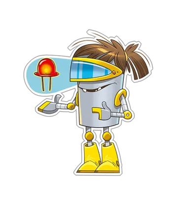
Indagador
Investiga, analiza información y formula preguntas.
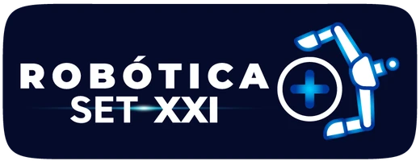
Robótica SET-XXI es el programa de Santillana que desarrolla las habilidades del siglo XXI con proyectos reales de robótica, programación, computación física e impresión 3D. Del primer circuito en Transición al prototipo experto en 11°.
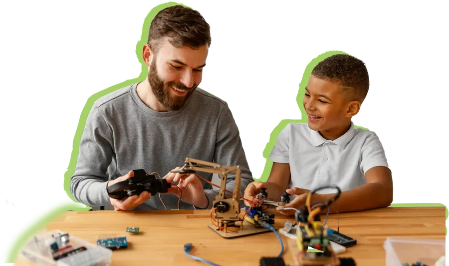
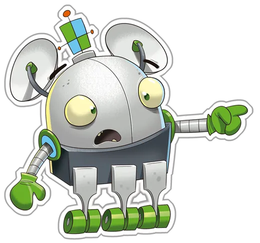
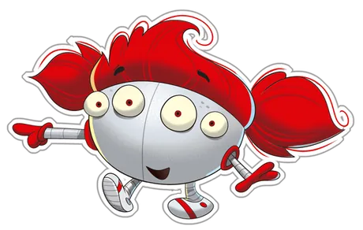
En pocos minutos, el programa contado por sus protagonistas: estudiantes que diseñan, construyen y explican sus propias soluciones.
Robótica SET-XXI desarrolla habilidades del siglo XXI a través de proyectos tecnológicos basados en la robótica educativa, la computación física, el pensamiento computacional, la programación y el diseño e impresión 3D, integrados al proceso de enseñanza y aprendizaje.
El aprendizaje crece de forma gradual, según las capacidades y el ritmo de cada etapa, desde Transición hasta 11°.
No se trata de sumar dispositivos al aula. Ciencia, tecnología, ingeniería, arte y matemáticas se integran en cada experiencia.
Los estudiantes enfrentan desafíos, experimentan, identifican y corrigen errores, y reflexionan sobre su propio proceso.
La tecnología es el medio. El estudiante es el centro.
En Robótica SET-XXI nadie viene a mirar un robot: vienen a construirlo. Cada proyecto parte de un problema de su entorno, inspirado en los Objetivos de Desarrollo Sostenible, y termina con un prototipo que funciona y un equipo que aprendió a pensar junto.
Así formamos lo que nos mueve en UNOi: personas que entienden la tecnología, la usan con criterio y la ponen al servicio de los demás.
Formamos seres humanos plenos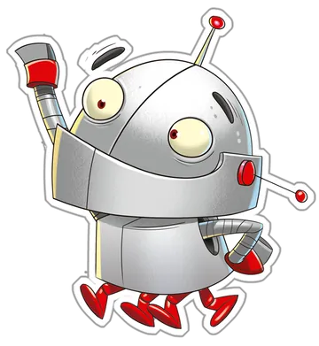
Las destrezas tecnológicas abren la puerta. Las habilidades humanas son las que se quedan para toda la vida.
Lo que ponen en práctica en cada proyecto.
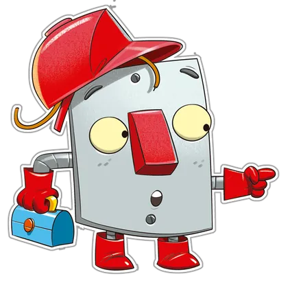
Lo que desarrollan como personas, proyecto tras proyecto.
La tecnología se vuelve herramienta para explorar, construir, innovar y resolver. Los estudiantes son protagonistas de soluciones para su entorno.
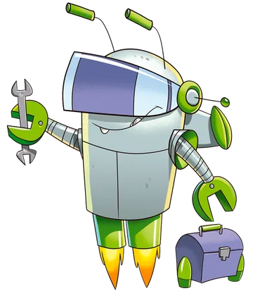
Mientras recorren las fases, cada estudiante asume uno de cuatro roles. Así nadie se queda mirando: todos aportan algo que el equipo necesita.

Investiga, analiza información y formula preguntas.
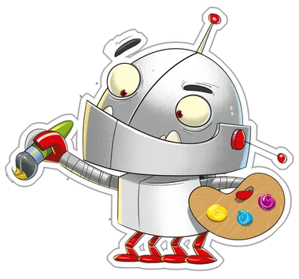
Propone ideas y planifica soluciones.
Desarrolla el prototipo y lo pone a funcionar.
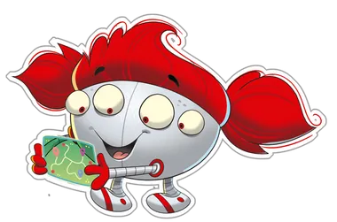
Documenta, presenta y divulga los resultados del proyecto.
Cada nivel responde a una dificultad, unas narrativas de aprendizaje, unas competencias y unas evidencias de desempeño propias de la edad.
Se implementa en Tecnología e Informática, Robótica o áreas afines.
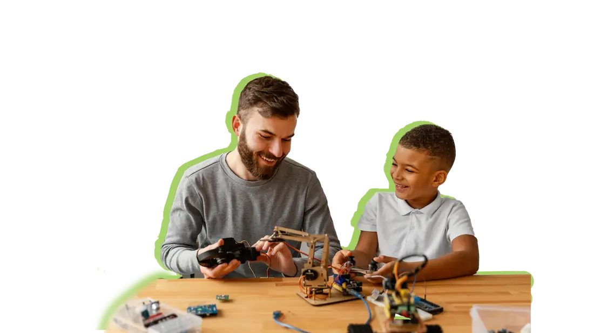
Componentes, competencias, habilidades y evidencias se articulan de forma natural con el currículo.
Potencia el pensamiento crítico al analizar procesos lógicos y resolver desafíos.
Fortalece la comunicación con la expresión clara de ideas.
Despierta la curiosidad con la exploración y la experimentación.
Fomenta la empatía y la comprensión del entorno social.
Recursos pedagógicos, tecnológicos y de acompañamiento pensados para cada actor: estudiantes, docentes y directivos.
Es el recurso físico que cada estudiante recibe de forma individual, por grado. Acompaña todas las etapas del proyecto.
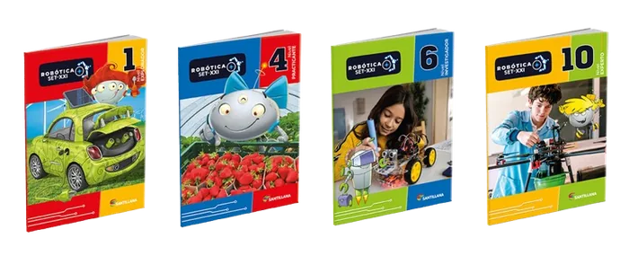
Organizado por grado, con secuencias paso a paso alineadas con la metodología del programa.
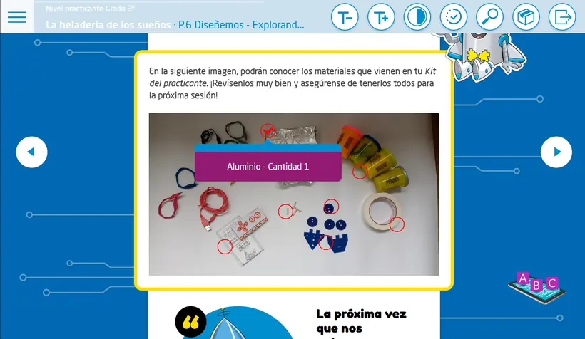
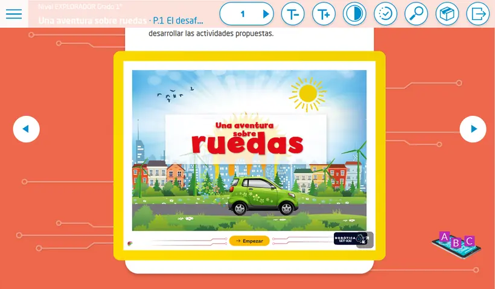
Contiene los componentes electrónicos y las estructuras para construir los prototipos de forma colaborativa.
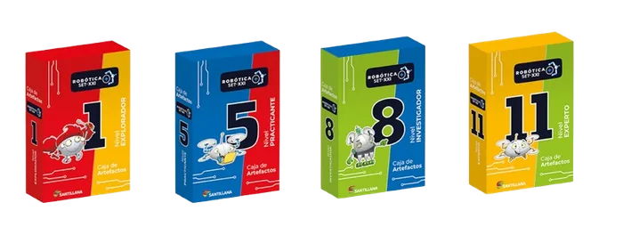
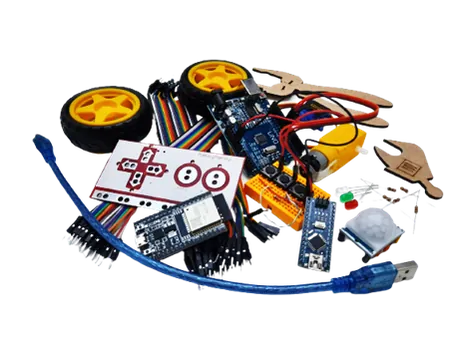
Los estudiantes diseñan, programan y prueban sus circuitos en pantalla antes de pasar al prototipo físico. Así se equivocan sin miedo y aprenden más rápido.
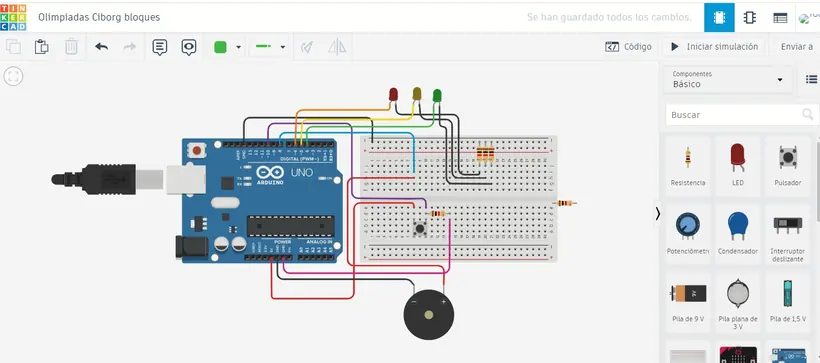
Especialistas en robótica acompañan al colegio para asegurar una implementación efectiva del programa.
Los estudiantes participan en eventos y competencias que celebran sus proyectos y les dan un público real.
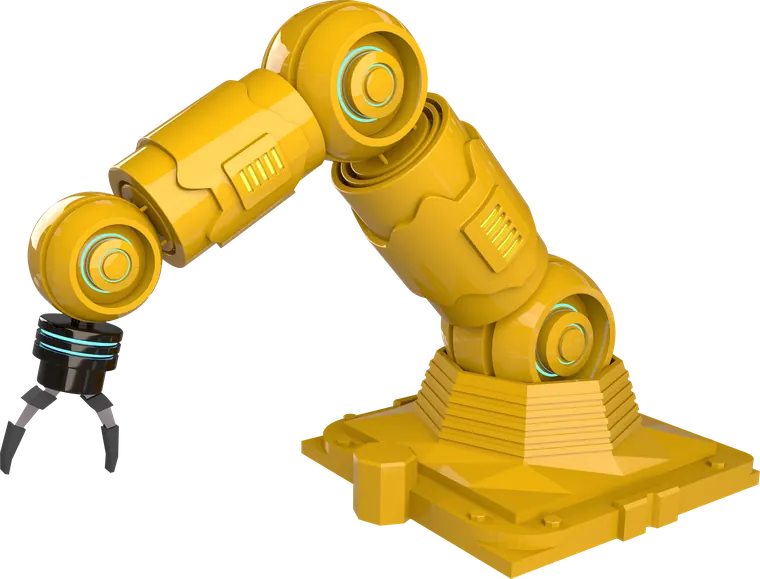
Robótica SET-XXI no es una actividad extracurricular: es un programa curricular que responde a lo que hoy se espera de Tecnología e Informática.
Alineado con los estándares de la International Society for Technology in Education.
Responde a las orientaciones curriculares para Tecnología e Informática del Ministerio de Educación Nacional.
La Ley de Educación Digital moderniza la asignatura de Tecnología e Informática en básica y media.
En Tecnología e Informática, Robótica o áreas afines. Se recomienda una intensidad mínima de una sesión semanal de una hora.
Cuatro proyectos por grado durante el año escolar, de unas ocho horas cada uno, a lo largo de 32 semanas.
El primer año, una caja por cada cuatro estudiantes en cada grado, más una caja por grado para el colegio y sus docentes. En los años siguientes llegan partes, componentes y repuestos para mantenimiento, ampliación y reposición.
El docente cuenta con el libro web Maestro Maker, con orientaciones pedagógicas y secuencias didácticas paso a paso, además de formación, rutas formativas autogestionadas y el acompañamiento de especialistas en robótica.
Cada proyecto cierra con la fase de evaluación: los estudiantes reflexionan sobre sus aprendizajes, logros y oportunidades de mejora con una rúbrica de valoración. La cartilla incluye también la evaluación del prototipo.
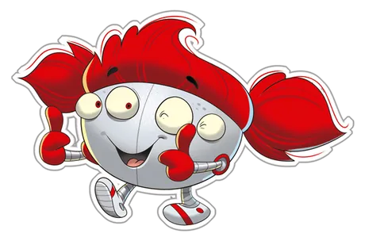
Robótica SET-XXI convierte la curiosidad en prototipos y los prototipos en personas más seguras, creativas y conscientes de su entorno.
Contenido original: Coach Virtual UNOi · Robótica SET-XXI. Consultar fuente